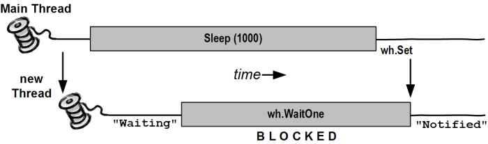
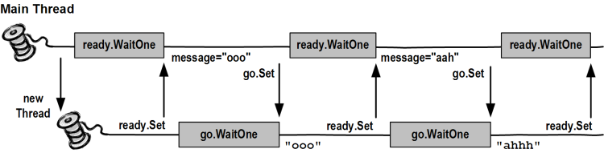

Threading in C#
Joseph Albahari
Last updated: 2011-4-27
Translations:
Chinese
| Czech
| Persian
| Russian
| Japanese
Download PDF
Part 2: Basic Synchronization
So far, we’ve described how to start a task on a thread,
configure a thread, and pass data in both directions. We’ve also described how
local variables are private to a thread and how references can be shared among
threads, allowing them to communicate via common fields.
The next step is synchronization:
coordinating the actions of threads for a predictable outcome. Synchronization
is particularly important when threads access the same data; it’s surprisingly
easy to run aground in this area.
Synchronization constructs can be divided into four
categories:
- Simple blocking methods
- These wait for another thread to finish or for a period
of time to elapse.
Sleep, Join,
and Task.Wait are simple blocking methods.
- Locking constructs
- These limit the number of threads that can perform some
activity or execute a section of code at a time. Exclusive locking
constructs are most common — these allow just one thread in at a time, and allow
competing threads to access common data without interfering with each other.
The standard exclusive locking constructs are
lock (Monitor.Enter/Monitor.Exit), Mutex,
and SpinLock. The nonexclusive locking constructs
are Semaphore, SemaphoreSlim, and the reader/writer locks.
- Signaling constructs
- These allow a thread to pause until receiving a
notification from another, avoiding the need for inefficient polling. There are
two commonly used signaling devices: event
wait handles and
Monitor’s Wait/Pulse
methods. Framework 4.0 introduces the CountdownEvent and Barrier classes.
- Nonblocking synchronization constructs
- These protect access to a common field by calling upon
processor primitives. The CLR and C# provide the following nonblocking
constructs:
Thread.MemoryBarrier, Thread.VolatileRead, Thread.VolatileWrite, the
volatile
keyword, and the Interlocked
class.
Blocking is essential to all but the last category. Let’s
briefly examine this concept.
A thread is deemed blocked when its execution is
paused for some reason, such as when Sleeping or
waiting for another to end via Join or EndInvoke. A blocked thread immediately yields its processor time slice, and from then on
consumes no processor time until its blocking condition is satisfied. You can
test for a thread being blocked via its ThreadState property:
bool blocked = (someThread.ThreadState & ThreadState.WaitSleepJoin) != 0;
More than the coolest LINQ tool
LINQPad is now the ultimate
C# scratchpad!
Interactive development in a standalone executable!
Written by the author of this article
FREE
(Given that a thread’s state may change in between testing
its state and then acting upon that information, this code is useful only in
diagnostic scenarios.)
When a thread blocks or unblocks, the operating system
performs a context switch. This incurs an
overhead of a few microseconds.
Unblocking happens in one of four ways (the computer's
power button doesn't count!):
- by the blocking condition being satisfied
- by the operation timing out (if a timeout is specified)
- by being interrupted via Thread.Interrupt
- by being aborted via Thread.Abort
A thread is not deemed blocked if its execution is paused
via the (deprecated) Suspend method.
Sometimes a thread must pause until a certain condition is
met. Signaling and locking
constructs achieve this efficiently by blocking until a condition is
satisfied. However, there is a simpler alternative: a thread can await a
condition by spinning in a polling loop. For
example:
while (!proceed);
or:
while (DateTime.Now < nextStartTime);
In general, this is very wasteful on processor time: as
far as the CLR and operating system are concerned, the thread is performing an
important calculation, and so gets allocated resources accordingly!
Sometimes a hybrid between blocking and spinning is used:
while (!proceed) Thread.Sleep (10);
Although inelegant, this is (in general) far more
efficient than outright spinning. Problems can arise, though, due to
concurrency issues on the proceed flag. Proper use
of locking and signaling
avoids this.
Spinning very briefly can be effective when you
expect a condition to be satisfied soon (perhaps within a few microseconds)
because it avoids the overhead and latency of a context switch. The .NET
Framework provides special methods and classes to assist — these are covered
in the parallel programming section.
You can query a thread's execution status via its ThreadState property. This returns a flags enum of type ThreadState, which combines three “layers” of data in a
bitwise fashion. Most values, however, are redundant, unused, or deprecated.
The following diagram shows one “layer”:
The following code strips a ThreadState
to one of the four most useful values: Unstarted, Running, WaitSleepJoin, and Stopped:
public static ThreadState SimpleThreadState (ThreadState ts)
{
return ts & (ThreadState.Unstarted |
ThreadState.WaitSleepJoin |
ThreadState.Stopped);
}
The ThreadState property is
useful for diagnostic purposes, but unsuitable for synchronization, because a
thread’s state may change in between testing ThreadState
and acting on that information.
Exclusive locking is used to ensure that only one thread
can enter particular sections of code at a time. The two main exclusive locking
constructs are lock and Mutex.
Of the two, the lock construct is faster and more
convenient. Mutex, though, has a niche in that its
lock can span applications in different processes on the computer.
In this section, we’ll start with the lock
construct and then move on to Mutex
and semaphores (for nonexclusive locking). Later,
we’ll cover reader/writer locks.
From Framework 4.0, there is also the SpinLock
struct for high-concurrency scenarios.
Let’s start with the following class:
class ThreadUnsafe
{
static int _val1 = 1, _val2 = 1;
static void Go()
{
if (_val2 != 0) Console.WriteLine (_val1 / _val2);
_val2 = 0;
}
}
This class is not thread-safe: if Go
was called by two threads simultaneously, it would be possible to get a
division-by-zero error, because _val2 could be set
to zero in one thread right as the other thread was in between executing the if statement and Console.WriteLine.
Here’s how lock can fix the
problem:
class ThreadSafe
{
static readonly object _locker = new object();
static int _val1, _val2;
static void Go()
{
lock (_locker)
{
if (_val2 != 0) Console.WriteLine (_val1 / _val2);
_val2 = 0;
}
}
}
Only one thread can lock the synchronizing object (in this
case, _locker) at a time, and any contending threads
are blocked until the lock is released. If more than
one thread contends the lock, they are queued on a “ready queue” and granted
the lock on a first-come, first-served basis (a caveat is that nuances in the
behavior of Windows and the CLR mean that the fairness of the queue can
sometimes be violated). Exclusive locks are sometimes said to enforce serialized access to whatever’s protected by the
lock, because one thread’s access cannot overlap with that of another. In this
case, we’re protecting the logic inside the Go
method, as well as the fields _val1 and _val2.
A thread blocked while awaiting a contended lock has a ThreadState of WaitSleepJoin. In Interrupt
and Abort, we describe how a blocked thread can be forcibly released via
another thread. This is a fairly heavy-duty technique that might be used in
ending a thread.
C#’s lock statement is in fact
a syntactic shortcut for a call to the methods Monitor.Enter
and Monitor.Exit, with a try/finally block. Here’s (a simplified version of) what’s
actually happening within the Go method of the
preceding example:
Monitor.Enter (_locker);
try
{
if (_val2 != 0) Console.WriteLine (_val1 / _val2);
_val2 = 0;
}
finally { Monitor.Exit (_locker); }
Calling Monitor.Exit without
first calling Monitor.Enter on the same object
throws an exception.
The code that we just demonstrated is exactly what the C#
1.0, 2.0, and 3.0 compilers produce in translating a lock
statement.
There’s a subtle vulnerability in this code, however.
Consider the (unlikely) event of an exception being thrown within the implementation
of Monitor.Enter, or between the call to Monitor.Enter and the try block
(due, perhaps, to Abort being
called on that thread — or an OutOfMemoryException
being thrown). In such a scenario, the lock may or may not be taken. If the
lock is taken, it won’t be released — because we’ll never enter the try/finally block. This will
result in a leaked lock.
To avoid this danger, CLR 4.0’s designers added the
following overload to Monitor.Enter:
public static void Enter (object obj, ref bool lockTaken);
lockTaken is false after this
method if (and only if) the Enter method throws an
exception and the lock was not taken.
Here’s the correct pattern of use (which is exactly how C#
4.0 translates a lock statement):
bool lockTaken = false;
try
{
Monitor.Enter (_locker, ref lockTaken);
// Do your stuff...
}
finally { if (lockTaken) Monitor.Exit (_locker); }
TryEnter
Monitor also provides a TryEnter method that allows a timeout to be specified,
either in milliseconds or as a TimeSpan. The method
then returns true if a lock was obtained, or false if no lock was obtained because the method timed
out. TryEnter can also be called with no argument,
which “tests” the lock, timing out immediately if the lock can’t be obtained
right away.
As with the Enter method, it’s
overloaded in CLR 4.0 to accept a lockTaken
argument.
Any object visible to each of the partaking threads can be
used as a synchronizing object, subject to one hard rule: it must be a
reference type. The synchronizing object is typically private (because this
helps to encapsulate the locking logic) and is typically an instance or static
field. The synchronizing object can double as the object it’s protecting, as
the _list field does in the following example:
class ThreadSafe
{
List <string> _list = new List <string>();
void Test()
{
lock (_list)
{
_list.Add ("Item 1");
...
A field dedicated for the purpose of locking (such as _locker, in the example prior) allows precise control over
the scope and granularity of the lock. The containing object (this) — or even its type — can also be used as a
synchronization object:
lock (this) { ... }
or:
lock (typeof (Widget)) { ... } // For protecting access to statics
The disadvantage of locking in this way is that you're not
encapsulating the locking logic, so it becomes harder to prevent deadlocking and excessive blocking.
A lock on a type may also seep through application domain boundaries (within
the same process).
You can also lock on local variables captured by lambda
expressions or anonymous methods.
Locking doesn’t restrict access to the synchronizing object
itself in any way. In other words, x.ToString() will
not block because another thread has called lock(x); both threads must call lock(x)
in order for blocking to occur.
As a basic rule, you need to lock around accessing any
writable shared field. Even in the simplest case — an assignment operation
on a single field — you must consider synchronization. In the following class,
neither the Increment nor the Assign
method is thread-safe:
class ThreadUnsafe
{
static int _x;
static void Increment() { _x++; }
static void Assign() { _x = 123; }
}
Here are thread-safe versions of Increment
and Assign:
class ThreadSafe
{
static readonly object _locker = new object();
static int _x;
static void Increment() { lock (_locker) _x++; }
static void Assign() { lock (_locker) _x = 123; }
}
In Nonblocking
Synchronization, we explain how this need arises, and how the memory
barriers and the Interlocked
class can provide alternatives to locking in these situations.
If a group of variables are always read and written within
the same lock, you can say the variables are read and written atomically. Let’s suppose fields x and y are always read and
assigned within a lock on object locker:
lock (locker) { if (x != 0) y /= x; }
One can say x and y are accessed atomically, because the code block cannot
be divided or preempted by the actions of another thread in such a way that it
will change x or y and invalidate
its outcome. You’ll never get a division-by-zero error, providing x and y are always accessed
within this same exclusive lock.
The atomicity provided by a lock is violated if an
exception is thrown within a lock block. For
example, consider the following:
decimal _savingsBalance, _checkBalance;
void Transfer (decimal amount)
{
lock (_locker)
{
_savingsBalance += amount;
_checkBalance -= amount + GetBankFee();
}
}
If an exception was thrown by GetBankFee(),
the bank would lose money. In this case, we could avoid the problem by calling GetBankFee earlier. A solution for more complex cases is
to implement “rollback” logic within a catch or finally block.
Instruction atomicity is a different, although
analogous concept: an instruction is atomic if it executes indivisibly on the
underlying processor (see Nonblocking
Synchronization).
A thread can repeatedly lock the same object in a nested (reentrant) fashion:
lock (locker)
lock (locker)
lock (locker)
{
// Do something...
}
or:
Monitor.Enter (locker); Monitor.Enter (locker); Monitor.Enter (locker);
// Do something...
Monitor.Exit (locker); Monitor.Exit (locker); Monitor.Exit (locker);
In these scenarios, the object is unlocked only when the
outermost lock statement has exited — or a matching
number of Monitor.Exit statements have executed.
Nested locking is useful when one method calls another
within a lock:
static readonly object _locker = new object();
static void Main()
{
lock (_locker)
{
AnotherMethod();
// We still have the lock - because locks are reentrant.
}
}
static void AnotherMethod()
{
lock (_locker) { Console.WriteLine ("Another method"); }
}
A thread can block on only the
first (outermost) lock.
A deadlock happens when two threads each wait for a
resource held by the other, so neither can proceed. The easiest way to
illustrate this is with two locks:
object locker1 = new object();
object locker2 = new object();
new Thread (() => {
lock (locker1)
{
Thread.Sleep (1000);
lock (locker2); // Deadlock
}
}).Start();
lock (locker2)
{
Thread.Sleep (1000);
lock (locker1); // Deadlock
}
More elaborate deadlocking chains can be created with
three or more threads.
The CLR, in a standard hosting environment, is not like
SQL Server and does not automatically detect and resolve deadlocks by
terminating one of the offenders. A threading deadlock causes participating
threads to block indefinitely, unless you’ve specified
a locking timeout. (Under the SQL CLR integration host, however, deadlocks are
automatically detected and a [catchable] exception is thrown on one of the
threads.)
Deadlocking is one of the hardest problems in
multithreading — especially when there are many interrelated objects.
Fundamentally, the hard problem is that you can't be sure what locks your caller
has taken out.
So, you might innocently lock private field a within your class x, unaware
that your caller (or caller's caller) has already locked field b within class y. Meanwhile,
another thread is doing the reverse — creating a deadlock. Ironically, the
problem is exacerbated by (good) object-oriented design patterns, because such
patterns create call chains that are not determined until runtime.
The popular advice, “lock objects in a consistent order to
avoid deadlocks,” although helpful in our initial example, is hard to apply to
the scenario just described. A better strategy is to be wary of locking around
calling methods in objects that may have references back to your own object.
Also, consider whether you really need to lock around calling methods in other
classes (often you do — as we’ll see later — but sometimes
there are other options). Relying more on declarative and
data parallelism, immutable types, and nonblocking synchronization constructs,
can lessen the need for locking.
Here is an alternative way to perceive the problem: when you
call out to other code while holding a lock, the encapsulation of that lock
subtly leaks. This is not a fault in the CLR or .NET Framework, but a
fundamental limitation of locking in general. The problems of locking are being
addressed in various research projects, including Software
Transactional Memory.
Another deadlocking scenario arises when calling Dispatcher.Invoke (in a WPF application) or Control.Invoke (in a Windows Forms application) while in
possession of a lock. If the UI happens to be running another method that’s
waiting on the same lock, a deadlock will happen right there. This can often be
fixed simply by calling BeginInvoke instead of Invoke. Alternatively, you can release your lock before
calling Invoke, although this won't work if your caller
took out the lock. We explain Invoke and BeginInvoke in Rich
Client Applications and Thread Affinity.
Locking is fast: you can expect to acquire and release a
lock in as little as 20 nanoseconds on a 2010-era computer if the lock is
uncontended. If it is contended, the consequential context switch moves the
overhead closer to the microsecond region, although it may be longer before the
thread is actually rescheduled. You can avoid the cost of a context switch with
the SpinLock class — if you’re locking very briefly.
Locking can degrade concurrency if locks are held for too
long. This can also increase the chance of deadlock.
A Mutex is like a C# lock, but it can work across multiple processes. In other
words, Mutex can be computer-wide as well
as application-wide.
Acquiring and releasing an uncontended Mutex
takes a few microseconds — about 50 times slower than a lock.
With a Mutex class, you call
the WaitOne method to lock and ReleaseMutex
to unlock. Closing or disposing a Mutex
automatically releases it. Just as with the lock
statement, a Mutex can be released only from the
same thread that obtained it.
A common use for a cross-process Mutex
is to ensure that only one instance of a program can run at a time. Here’s how
it’s done:
class OneAtATimePlease
{
static void Main()
{
// Naming a Mutex makes it available computer-wide. Use a name that's
// unique to your company and application (e.g., include your URL).
using (var mutex = new Mutex (false, "oreilly.com OneAtATimeDemo"))
{
// Wait a few seconds if contended, in case another instance
// of the program is still in the process of shutting down.
if (!mutex.WaitOne (TimeSpan.FromSeconds (3), false))
{
Console.WriteLine ("Another app instance is running. Bye!");
return;
}
RunProgram();
}
}
static void RunProgram()
{
Console.WriteLine ("Running. Press Enter to exit");
Console.ReadLine();
}
}
If running under Terminal Services, a computer-wide Mutex is ordinarily visible only to applications in the
same terminal server session. To make it visible to all terminal server
sessions, prefix its name with Global\.
A semaphore is like a nightclub: it has a certain
capacity, enforced by a bouncer. Once it’s full, no more people can enter, and
a queue builds up outside. Then, for each person that leaves, one person enters
from the head of the queue. The constructor requires a minimum of two
arguments: the number of places currently available in the nightclub and the
club’s total capacity.
A semaphore with a capacity of one is similar to a Mutex or lock, except that the semaphore
has no “owner” — it’s thread-agnostic. Any
thread can call Release on a Semaphore,
whereas with Mutex and lock,
only the thread that obtained the lock can release it.
There are two functionally similar versions of this class: Semaphore and SemaphoreSlim.
The latter was introduced in Framework 4.0 and has been optimized to meet the
low-latency demands of parallel programming.
It’s also useful in traditional multithreading because it lets you specify a cancellation token when waiting. It cannot,
however, be used for interprocess signaling.
Semaphore incurs about 1
microsecond in calling WaitOne or Release; SemaphoreSlim incurs
about a quarter of that.
Semaphores can be useful in limiting concurrency — preventing
too many threads from executing a particular piece of code at once. In the
following example, five threads try to enter a nightclub that allows only three
threads in at once:
class TheClub // No door lists!
{
static SemaphoreSlim _sem = new SemaphoreSlim (3); // Capacity of 3
static void Main()
{
for (int i = 1; i <= 5; i++) new Thread (Enter).Start (i);
}
static void Enter (object id)
{
Console.WriteLine (id + " wants to enter");
_sem.Wait();
Console.WriteLine (id + " is in!"); // Only three threads
Thread.Sleep (1000 * (int) id); // can be here at
Console.WriteLine (id + " is leaving"); // a time.
_sem.Release();
}
}
1 wants to enter
1 is in!
2 wants to enter
2 is in!
3 wants to enter
3 is in!
4 wants to enter
5 wants to enter
1 is leaving
4 is in!
2 is leaving
5 is in!
If the Sleep statement was
instead performing intensive disk I/O, the Semaphore
would improve overall performance by limiting excessive concurrent hard-drive
activity.
A Semaphore, if named, can span
processes in the same way as a Mutex.
A program or method is thread-safe if it has no
indeterminacy in the face of any multithreading scenario. Thread safety is
achieved primarily with locking and by reducing the possibilities for thread
interaction.
General-purpose types are rarely thread-safe in their
entirety, for the following reasons:
- The development burden in full thread safety can be significant,
particularly if a type has many fields (each field is a potential for
interaction in an arbitrarily multithreaded context).
- Thread safety can entail a performance cost (payable, in part,
whether or not the type is actually used by multiple threads).
- A thread-safe type does not necessarily make the program using it
thread-safe, and often the work involved in the latter makes the former
redundant.
Thread safety is hence usually implemented just where it
needs to be, in order to handle a specific multithreading scenario.
There are, however, a few ways to “cheat” and have large
and complex classes run safely in a multithreaded environment. One is to
sacrifice granularity by wrapping large sections of code — even access to an
entire object — within a single exclusive lock, enforcing
serialized access at a high level. This tactic is, in fact, essential if you
want to use thread-unsafe third-party code (or most Framework types, for that
matter) in a multithreaded context. The trick is simply to use the same
exclusive lock to protect access to all properties, methods, and fields on the
thread-unsafe object. The solution works well if the object’s methods all
execute quickly (otherwise, there will be a lot of blocking).
Primitive types aside, few .NET Framework types, when
instantiated, are thread-safe for anything more than concurrent read-only
access. The onus is on the developer to superimpose thread safety, typically
with exclusive locks. (The collections in System.Collections.Concurrent
are an exception.)
Another way to cheat is to minimize thread interaction by
minimizing shared data. This is an excellent approach and is used implicitly in
“stateless” middle-tier application and web page servers. Since multiple client
requests can arrive simultaneously, the server methods they call must be thread-safe.
A stateless design (popular for reasons of scalability) intrinsically limits
the possibility of interaction, since classes do not persist data between
requests. Thread interaction is then limited just to the static fields one may
choose to create, for such purposes as caching commonly used data in memory and
in providing infrastructure services such as authentication and auditing.
The final approach in implementing thread safety is to use
an automatic locking regime. The .NET
Framework does exactly this, if you subclass ContextBoundObject and apply the Synchronization attribute to the class. Whenever a method
or property on such an object is then called, an object-wide lock is
automatically taken for the whole execution of the method or property. Although
this reduces the thread-safety burden, it creates problems of its own: deadlocks that would not otherwise occur, impoverished
concurrency, and unintended reentrancy. For these reasons, manual locking is
generally a better option — at least until a less simplistic automatic locking
regime becomes available.
Locking can be used to convert thread-unsafe code into
thread-safe code. A good application of this is the .NET Framework: nearly all
of its nonprimitive types are not thread-safe (for anything more than read-only
access) when instantiated, and yet they can be used in multithreaded code if
all access to any given object is protected via a lock.
Here’s an example, where two threads simultaneously add an item to the same List collection, then enumerate the list:
class ThreadSafe
{
static List <string> _list = new List <string>();
static void Main()
{
new Thread (AddItem).Start();
new Thread (AddItem).Start();
}
static void AddItem()
{
lock (_list) _list.Add ("Item " + _list.Count);
string[] items;
lock (_list) items = _list.ToArray();
foreach (string s in items) Console.WriteLine (s);
}
}
In this case, we’re locking on the _list
object itself. If we had two interrelated lists, we would have to choose a
common object upon which to lock (we could nominate one of the lists, or
better: use an independent field).
Enumerating .NET collections is also thread-unsafe in the
sense that an exception is thrown if the list is modified during enumeration.
Rather than locking for the duration of enumeration, in this example we first
copy the items to an array. This avoids holding the lock excessively if what
we’re doing during enumeration is potentially time-consuming. (Another solution
is to use a reader/writer lock.)
Locking around thread-safe objects
Sometimes you also need to lock around accessing
thread-safe objects. To illustrate, imagine that the Framework’s List class was, indeed, thread-safe, and we want to add an
item to a list:
if (!_list.Contains (newItem)) _list.Add (newItem);
Whether or not the list was thread-safe, this statement is
certainly not! The whole if statement would have to
be wrapped in a lock in order to prevent preemption in between testing for
containership and adding the new item. This same lock would then need to be
used everywhere we modified that list. For instance, the following statement
would also need to be wrapped in the identical lock:
_list.Clear();
to ensure that it did not preempt the former statement. In
other words, we would have to lock exactly as with our thread-unsafe collection
classes (making the List class’s hypothetical thread
safety redundant).
Locking around accessing a collection can cause excessive blocking in highly concurrent environments. To this end,
Framework 4.0 provides a thread-safe queue, stack, and dictionary.
Static members
Wrapping access to an object around a custom lock works
only if all concurrent threads are aware of — and use — the lock. This may not be
the case if the object is widely scoped. The worst case is with static members
in a public type. For instance, imagine if the static property on the DateTime struct, DateTime.Now,
was not thread-safe, and that two concurrent calls could result in garbled
output or an exception. The only way to remedy this with external locking might
be to lock the type itself — lock(typeof(DateTime)) — before
calling DateTime.Now. This would work only if all
programmers agreed to do this (which is unlikely). Furthermore, locking a type
creates problems of its own.
For this reason, static members on the DateTime struct have been carefully programmed to be
thread-safe. This is a common pattern throughout the .NET Framework: static
members are thread-safe; instance members are not. Following this pattern
also makes sense when writing types for public consumption, so as not to create
impossible thread-safety conundrums. In other words, by making static methods
thread-safe, you’re programming so as not to preclude thread safety
for consumers of that type.
Thread safety in static methods is something that you must
explicitly code: it doesn’t happen automatically by virtue of the method being
static!
Read-only thread safety
Making types thread-safe for concurrent read-only access
(where possible) is advantageous because it means that consumers can avoid
excessive locking. Many of the .NET Framework types follow this principle:
collections, for instance, are thread-safe for concurrent readers.
Following this principle yourself is simple: if you document
a type as being thread-safe for concurrent read-only access, don’t write to
fields within methods that a consumer would expect to be read-only (or lock
around doing so). For instance, in implementing a ToArray()
method in a collection, you might start by compacting the collection’s internal
structure. However, this would make it thread-unsafe for consumers that
expected this to be read-only.
Read-only thread safety is one of the reasons that
enumerators are separate from “enumerables”: two threads can simultaneously
enumerate over a collection because each gets a separate enumerator object.
In the absence of documentation, it pays to be cautious in
assuming whether a method is read-only in nature. A good example is the Random class: when you call Random.Next(),
its internal implementation requires that it update private seed values.
Therefore, you must either lock around using the Random
class, or maintain a separate instance per thread.
Application servers need to be multithreaded to handle
simultaneous client requests. WCF, ASP.NET, and Web Services applications are
implicitly multithreaded; the same holds true for Remoting server applications
that use a network channel such as TCP or HTTP. This means that when writing
code on the server side, you must consider thread safety if there’s any
possibility of interaction among the threads processing client requests.
Fortunately, such a possibility is rare; a typical server class is either
stateless (no fields) or has an activation model that creates a separate object
instance for each client or each request. Interaction usually arises only
through static fields, sometimes used for caching in memory parts of a database
to improve performance.
For example, suppose you have a RetrieveUser
method that queries a database:
// User is a custom class with fields for user data
internal User RetrieveUser (int id) { ... }
If this method was called frequently, you could improve
performance by caching the results in a static Dictionary.
Here’s a solution that takes thread safety into account:
static class UserCache
{
static Dictionary <int, User> _users = new Dictionary <int, User>();
internal static User GetUser (int id)
{
User u = null;
lock (_users)
if (_users.TryGetValue (id, out u))
return u;
u = RetrieveUser (id); // Method to retrieve user from database
lock (_users) _users [id] = u;
return u;
}
}
We must, at a minimum, lock around reading and updating
the dictionary to ensure thread safety. In this example, we choose a practical
compromise between simplicity and performance in locking. Our design actually
creates a very small potential for inefficiency: if two threads simultaneously called
this method with the same previously unretrieved id,
the RetrieveUser method would be called twice — and
the dictionary would be updated unnecessarily. Locking once across the whole
method would prevent this, but would create a worse inefficiency: the entire
cache would be locked up for the duration of calling RetrieveUser,
during which time other threads would be blocked in
retrieving any user.
Both the Windows Presentation Foundation (WPF) and Windows
Forms libraries follow models based on thread affinity. Although each has a
separate implementation, they are both very similar in how they function.
The objects that make up a rich client are based primarily
on DependencyObject in the case of WPF, or Control in the case of Windows Forms. These objects have thread affinity, which means that only the thread
that instantiates them can subsequently access their members. Violating this
causes either unpredictable behavior, or an exception to be thrown.
On the positive side, this means you don’t need to lock
around accessing a UI object. On the negative side, if you want to call a
member on object X created on another thread Y, you must marshal the request to
thread Y. You can do this explicitly as follows:
- In WPF, call
Invoke or BeginInvoke on the element’s Dispatcher
object.
- In Windows Forms, call
Invoke or BeginInvoke on the control.
Invoke and BeginInvoke
both accept a delegate, which references the method on the target control that
you want to run. Invoke works synchronously:
the caller blocks until the marshal is complete. BeginInvoke works asynchronously: the caller
returns immediately and the marshaled request is queued up (using the same
message queue that handles keyboard, mouse, and timer events).
Assuming we have a window that contains a text box called txtMessage, whose content we wish a worker thread to
update, here's an example for WPF:
public partial class MyWindow : Window
{
public MyWindow()
{
InitializeComponent();
new Thread (Work).Start();
}
void Work()
{
Thread.Sleep (5000); // Simulate time-consuming task
UpdateMessage ("The answer");
}
void UpdateMessage (string message)
{
Action action = () => txtMessage.Text = message;
Dispatcher.Invoke (action);
}
}
The code is similar for Windows Forms, except that we call
the (Form’s) Invoke
method instead:
void UpdateMessage (string message)
{
Action action = () => txtMessage.Text = message;
this.Invoke (action);
}
The Framework provides two constructs to simplify this process:
Worker threads versus UI threads
It’s helpful to think of a rich client application as
having two distinct categories of threads: UI threads and worker threads. UI
threads instantiate (and subsequently “own”) UI elements; worker threads do
not. Worker threads typically execute long-running tasks such as fetching data.
Most rich client applications have a single UI thread
(which is also the main application thread) and periodically spawn worker
threads — either directly or using BackgroundWorker. These workers then
marshal back to the main UI thread in order to update controls or report on
progress.
So, when would an application have multiple UI threads?
The main scenario is when you have an application with multiple top-level
windows, often called a Single Document Interface (SDI) application,
such as Microsoft Word. Each SDI window typically shows itself as a separate
“application” on the taskbar and is mostly isolated, functionally, from other
SDI windows. By giving each such window its own UI thread, the application can
be made more responsive.
An immutable object is one whose state cannot be altered — externally
or internally. The fields in an immutable object are typically declared
read-only and are fully initialized during construction.
Immutability is a hallmark of functional programming — where
instead of mutating an object, you create a
new object with different properties. LINQ follows this paradigm. Immutability
is also valuable in multithreading in that it avoids the problem of shared
writable state — by eliminating (or minimizing) the writable.
One pattern is to use immutable objects to encapsulate a
group of related fields, to minimize lock durations. To take a very simple
example, suppose we had two fields as follows:
int _percentComplete;
string _statusMessage;
and we wanted to read/write them atomically. Rather than locking around these fields, we could define the following
immutable class:
class ProgressStatus // Represents progress of some activity
{
public readonly int PercentComplete;
public readonly string StatusMessage;
// This class might have many more fields...
public ProgressStatus (int percentComplete, string statusMessage)
{
PercentComplete = percentComplete;
StatusMessage = statusMessage;
}
}
Then we could define a single field of that type, along
with a locking object:
readonly object _statusLocker = new object();
ProgressStatus _status;
We can now read/write values of that type without holding
a lock for more than a single assignment:
var status = new ProgressStatus (50, "Working on it");
// Imagine we were assigning many more fields...
// ...
lock (_statusLocker) _status = status; // Very brief lock
To read the object, we first obtain a copy of the object
(within a lock). Then we can read its values without needing to hold on to the
lock:
ProgressStatus statusCopy;
lock (_locker ProgressStatus) statusCopy = _status; // Again, a brief lock
int pc = statusCopy.PercentComplete;
string msg = statusCopy.StatusMessage;
...
Technically, the last two lines of code are thread-safe by
virtue of the preceding lock performing an implicit memory barrier (see part 4).
Note that this lock-free approach prevents inconsistency
within a group of related fields. But it doesn't prevent data from changing
while you subsequently act on it — for this, you usually need a lock. In Part 5,
we’ll see more examples of using immutability to simplify
multithreading — including PLINQ.
It’s also possible to safely assign a new ProgressStatus
object based on its preceding value (e.g., it’s possible to “increment” the PercentComplete value) — without locking over more than one
line of code. In fact, we can do this without using a single lock, through the
use of explicit memory barriers, Interlocked.CompareExchange,
and spin-waits. This is an advanced technique which we describe in later in the parallel programming section.
Event wait handles are used for signaling. Signaling is when one thread waits
until it receives notification from another. Event wait handles are the
simplest of the signaling constructs, and they are unrelated to C# events. They
come in three flavors: AutoResetEvent,
ManualResetEvent,
and (from Framework 4.0) CountdownEvent.
The former two are based on the common EventWaitHandle
class, where they derive all their functionality.
An AutoResetEvent is like a
ticket turnstile: inserting a ticket lets exactly one person through. The
“auto” in the class’s name refers to the fact that an open turnstile
automatically closes or “resets” after someone steps through. A thread waits,
or blocks, at the turnstile by calling WaitOne (wait at this “one” turnstile until it opens), and
a ticket is inserted by calling the Set method. If a
number of threads call WaitOne, a queue builds up
behind the turnstile. (As with locks, the fairness of the queue can sometimes
be violated due to nuances in the operating system). A ticket can come from any
thread; in other words, any (unblocked) thread with access to the AutoResetEvent object can call Set
on it to release one blocked thread.
You can create an AutoResetEvent
in two ways. The first is via its constructor:
var auto = new AutoResetEvent (false);
(Passing true into the
constructor is equivalent to immediately calling Set
upon it.) The second way to create an AutoResetEvent
is as follows:
var auto = new EventWaitHandle (false, EventResetMode.AutoReset);
In the following example, a thread is started whose job is
simply to wait until signaled by another thread:
class BasicWaitHandle
{
static EventWaitHandle _waitHandle = new AutoResetEvent (false);
static void Main()
{
new Thread (Waiter).Start();
Thread.Sleep (1000); // Pause for a second...
_waitHandle.Set(); // Wake up the Waiter.
}
static void Waiter()
{
Console.WriteLine ("Waiting...");
_waitHandle.WaitOne(); // Wait for notification
Console.WriteLine ("Notified");
}
}
Waiting... (pause) Notified.

If Set is called when no thread
is waiting, the handle stays open for as long as it takes until some thread
calls WaitOne. This behavior helps avoid a race
between a thread heading for the turnstile, and a thread inserting a ticket
(“Oops, inserted the ticket a microsecond too soon, bad luck, now you’ll have
to wait indefinitely!”). However, calling Set
repeatedly on a turnstile at which no one is waiting doesn’t allow a whole
party through when they arrive: only the next single person is let through and
the extra tickets are “wasted.”
Calling Reset on an AutoResetEvent closes the turnstile (should it be open)
without waiting or blocking.
WaitOne accepts an optional
timeout parameter, returning false if the wait ended
because of a timeout rather than obtaining the signal.
Calling WaitOne with a timeout of 0 tests whether a wait handle is “open,” without blocking
the caller. Bear in mind, though, that doing this resets the AutoResetEvent if it’s open.
Let’s say we want the main thread to signal a worker thread
three times in a row. If the main thread simply calls Set
on a wait handle several times in rapid succession, the second or third signal
may get lost, since the worker may take time to process each signal.
The solution is for the main thread to wait until the
worker’s ready before signaling it. This can be done with another AutoResetEvent, as follows:
class TwoWaySignaling
{
static EventWaitHandle _ready = new AutoResetEvent (false);
static EventWaitHandle _go = new AutoResetEvent (false);
static readonly object _locker = new object();
static string _message;
static void Main()
{
new Thread (Work).Start();
_ready.WaitOne(); // First wait until worker is ready
lock (_locker) _message = "ooo";
_go.Set(); // Tell worker to go
_ready.WaitOne();
lock (_locker) _message = "ahhh"; // Give the worker another message
_go.Set();
_ready.WaitOne();
lock (_locker) _message = null; // Signal the worker to exit
_go.Set();
}
static void Work()
{
while (true)
{
_ready.Set(); // Indicate that we're ready
_go.WaitOne(); // Wait to be kicked off...
lock (_locker)
{
if (_message == null) return; // Gracefully exit
Console.WriteLine (_message);
}
}
}
}
ooo
ahhh

Here, we’re using a null message to indicate that the
worker should end. With threads that run indefinitely, it’s important to have
an exit strategy!
A producer/consumer queue is a common requirement in
threading. Here’s how it works:
- A queue is set up to describe work items — or data upon which work
is performed.
- When a task needs executing, it’s enqueued, allowing the caller
to get on with other things.
- One or more worker threads plug away in the background, picking
off and executing queued items.
The advantage of this model is that you have precise
control over how many worker threads execute at once. This can allow you to
limit consumption of not only CPU time, but other resources as well. If the
tasks perform intensive disk I/O, for instance, you might have just one worker
thread to avoid starving the operating system and other applications. Another
type of application may have 20. You can also dynamically add and remove
workers throughout the queue’s life. The CLR’s thread pool itself is a kind of
producer/consumer queue.
A producer/consumer queue typically holds items of data
upon which (the same) task is performed. For example, the items of data may be
filenames, and the task might be to encrypt those files.
In the example below, we use a single AutoResetEvent
to signal a worker, which waits when it runs out of tasks (in other words, when
the queue is empty). We end the worker by enqueing a null task:
using System;
using System.Threading;
using System.Collections.Generic;
class ProducerConsumerQueue : IDisposable
{
EventWaitHandle _wh = new AutoResetEvent (false);
Thread _worker;
readonly object _locker = new object();
Queue<string> _tasks = new Queue<string>();
public ProducerConsumerQueue()
{
_worker = new Thread (Work);
_worker.Start();
}
public void EnqueueTask (string task)
{
lock (_locker) _tasks.Enqueue (task);
_wh.Set();
}
public void Dispose()
{
EnqueueTask (null); // Signal the consumer to exit.
_worker.Join(); // Wait for the consumer's thread to finish.
_wh.Close(); // Release any OS resources.
}
void Work()
{
while (true)
{
string task = null;
lock (_locker)
if (_tasks.Count > 0)
{
task = _tasks.Dequeue();
if (task == null) return;
}
if (task != null)
{
Console.WriteLine ("Performing task: " + task);
Thread.Sleep (1000); // simulate work...
}
else
_wh.WaitOne(); // No more tasks - wait for a signal
}
}
}
To ensure thread safety, we used a lock to protect access
to the Queue<string> collection. We also
explicitly closed the wait handle in our Dispose
method, since we could potentially create and destroy many instances of this
class within the life of the application.
Here's a main method to test the queue:
static void Main()
{
using (ProducerConsumerQueue q = new ProducerConsumerQueue())
{
q.EnqueueTask ("Hello");
for (int i = 0; i < 10; i++) q.EnqueueTask ("Say " + i);
q.EnqueueTask ("Goodbye!");
}
// Exiting the using statement calls q's Dispose method, which
// enqueues a null task and waits until the consumer finishes.
}
Performing task: Hello
Performing task: Say 1
Performing task: Say 2
Performing task: Say 3
...
...
Performing task: Say 9
Goodbye!
Framework 4.0 provides a new
class called BlockingCollection<T> that
implements the functionality of a producer/consumer queue.
Our manually written producer/consumer queue is still
valuable — not only to illustrate AutoResetEvent and thread safety, but also as a basis for more
sophisticated structures. For instance, if we wanted a bounded blocking queue (limiting the number of
enqueued tasks) and also wanted to support cancellation (and removal) of
enqueued work items, our code would provide an excellent starting point. We’ll
take the producer/consume queue example further in our discussion of Wait and Pulse.
A ManualResetEvent functions
like an ordinary gate. Calling Set opens the gate,
allowing any number of threads calling WaitOne
to be let through. Calling Reset closes the gate.
Threads that call WaitOne on a closed gate will block; when the gate is next opened, they will be
released all at once. Apart from these differences, a ManualResetEvent
functions like an AutoResetEvent.
As with AutoResetEvent, you can
construct a ManualResetEvent in two ways:
var manual1 = new ManualResetEvent (false);
var manual2 = new EventWaitHandle (false, EventResetMode.ManualReset);
From Framework 4.0, there's another version of ManualResetEvent called ManualResetEventSlim.
The latter is optimized for short waiting times — with the ability to opt into spinning for a set number of iterations.
It also has a more efficient managed implementation and allows a Wait to be canceled via a CancellationToken. It cannot, however, be
used for interprocess signaling. ManualResetEventSlim
doesn’t subclass WaitHandle; however, it exposes a WaitHandle property that returns a WaitHandle-based
object when called (with the performance profile of a traditional wait handle).
A ManualResetEvent is useful in
allowing one thread to unblock many other threads. The reverse scenario is
covered by CountdownEvent.
CountdownEvent lets you wait on
more than one thread. The class is new to Framework 4.0 and has an efficient
fully managed implementation.
If you’re running on an earlier version of the .NET Framework,
all is not lost! Later on, we show how to write a CountdownEvent using Wait and Pulse.
To use CountdownEvent,
instantiate the class with the number of threads or “counts” that you want to
wait on:
var countdown = new CountdownEvent (3); // Initialize with "count" of 3.
Calling Signal decrements the
“count”; calling Wait blocks
until the count goes down to zero. For example:
static CountdownEvent _countdown = new CountdownEvent (3);
static void Main()
{
new Thread (SaySomething).Start ("I am thread 1");
new Thread (SaySomething).Start ("I am thread 2");
new Thread (SaySomething).Start ("I am thread 3");
_countdown.Wait(); // Blocks until Signal has been called 3 times
Console.WriteLine ("All threads have finished speaking!");
}
static void SaySomething (object thing)
{
Thread.Sleep (1000);
Console.WriteLine (thing);
_countdown.Signal();
}
Problems for which CountdownEvent
is effective can sometimes be solved more easily using the structured parallelism constructs that we’ll cover
in Part 5 (PLINQ and the Parallel class).
You can reincrement a CountdownEvent’s
count by calling AddCount. However, if it has
already reached zero, this throws an exception: you can’t “unsignal” a CountdownEvent by calling AddCount.
To avoid the possibility of an exception being thrown, you can instead call TryAddCount, which returns false
if the countdown is zero.
To unsignal a countdown event, call Reset:
this both unsignals the construct and resets its count to the original value.
Like ManualResetEventSlim, CountdownEvent exposes a WaitHandle
property for scenarios where some other class or method expects an object based
on WaitHandle.
EventWaitHandle’s constructor
allows a “named” EventWaitHandle to be created,
capable of operating across multiple processes. The name is simply a string,
and it can be any value that doesn’t unintentionally conflict with someone
else’s! If the name is already in use on the computer, you get a reference to
the same underlying EventWaitHandle; otherwise, the
operating system creates a new one. Here’s an example:
EventWaitHandle wh = new EventWaitHandle (false, EventResetMode.AutoReset,
"MyCompany.MyApp.SomeName");
If two applications each ran this code, they would be able
to signal each other: the wait handle would work across all threads in both
processes.
If your application has lots of threads that spend most of
their time blocked on a wait handle, you can reduce the resource burden by
calling ThreadPool.RegisterWaitForSingleObject. This
method accepts a delegate that is executed when a wait handle is signaled.
While it’s waiting, it doesn’t tie up a thread:
static ManualResetEvent _starter = new ManualResetEvent (false);
public static void Main()
{
RegisteredWaitHandle reg = ThreadPool.RegisterWaitForSingleObject
(_starter, Go, "Some Data", -1, true);
Thread.Sleep (5000);
Console.WriteLine ("Signaling worker...");
_starter.Set();
Console.ReadLine();
reg.Unregister (_starter); // Clean up when we’re done.
}
public static void Go (object data, bool timedOut)
{
Console.WriteLine ("Started - " + data);
// Perform task...
}
(5 second delay)
Signaling worker...
Started - Some Data
When the wait handle is signaled (or a timeout elapses),
the delegate runs on a pooled thread.
In addition to the wait handle and delegate, RegisterWaitForSingleObject accepts a “black box” object
that it passes to your delegate method (rather like ParameterizedThreadStart),
as well as a timeout in milliseconds (–1 meaning no timeout) and a boolean flag
indicating whether the request is one-off rather than recurring.
RegisterWaitForSingleObject is
particularly valuable in an application server that must handle many concurrent
requests. Suppose you need to block on a ManualResetEvent and simply call WaitOne:
void AppServerMethod()
{
_wh.WaitOne();
// ... continue execution
}
If 100 clients called this method, 100 server threads
would be tied up for the duration of the blockage. Replacing _wh.WaitOne with RegisterWaitForSingleObject
allows the method to return immediately, wasting no threads:
void AppServerMethod
{
RegisteredWaitHandle reg = ThreadPool.RegisterWaitForSingleObject
(_wh, Resume, null, -1, true);
...
}
static void Resume (object data, bool timedOut)
{
// ... continue execution
}
The data object passed to Resume
allows continuance of any transient data.
In addition to the Set, WaitOne, and Reset methods,
there are static methods on the WaitHandle class to
crack more complex synchronization nuts. The WaitAny,
WaitAll, and SignalAndWait
methods perform atomic signaling and waiting operations on multiple handles.
The wait handles can be of differing types (including Mutex and Semphore,
since these also derive from the abstract WaitHandle
class). ManualResetEventSlim
and CountdownEvent
can also partake in these methods via their WaitHandle
properties.
WaitAll and SignalAndWait have a weird connection to the legacy COM architecture:
these methods require that the caller be in a multithreaded apartment, the
model least suitable for interoperability. The main thread of a WPF or Windows
application, for example, is unable to interact with the clipboard in this
mode. We’ll discuss alternatives shortly.
WaitHandle.WaitAny waits for
any one of an array of wait handles; WaitHandle.WaitAll
waits on all of the given handles, atomically. This means that if you wait on
two AutoResetEvents:
-
WaitAny will never end up “latching”
both events.
-
WaitAll will never end up “latching”
only one event.
SignalAndWait calls Set on one WaitHandle, and then
calls WaitOne on another WaitHandle.
The atomicity guarantee is that after signaling the first handle, it will jump
to the head of the queue in waiting on the second handle: you can think of it
as “swapping” one signal for another. You can use this method on a pair of EventWaitHandles to set up two threads to rendezvous or
“meet” at the same point in time. Either AutoResetEvent or ManualResetEvent will do the trick. The
first thread executes the following:
WaitHandle.SignalAndWait (wh1, wh2);
whereas the second thread does the opposite:
WaitHandle.SignalAndWait (wh2, wh1);
Alternatives to WaitAll and SignalAndWait
WaitAll and SignalAndWait won’t run in a single-threaded apartment.
Fortunately, there are alternatives. In the case of SignalAndWait,
it’s rare that you need its atomicity guarantee: in our rendezvous example, for
instance, you could simply call Set on the first
wait handle, and then WaitOne on the other. In The Barrier Class, we’ll explore yet another
option for implementing a thread rendezvous.
In the case of WaitAll, an
alternative in some situations is to use the Parallel
class’s Invoke method,
which we’ll cover in Part 5. (We’ll also cover Tasks and continuations,
and see how TaskFactory's ContinueWhenAny
provides an alternative to WaitAny.)
In all other scenarios, the answer is to take the
low-level approach that solves all signaling problems: Wait and
Pulse.
An alternative to locking manually
is to lock declaratively. By deriving from ContextBoundObject and applying the Synchronization
attribute, you instruct the CLR to apply locking automatically. For example:
using System;
using System.Threading;
using System.Runtime.Remoting.Contexts;
[Synchronization]
public class AutoLock : ContextBoundObject
{
public void Demo()
{
Console.Write ("Start...");
Thread.Sleep (1000); // We can't be preempted here
Console.WriteLine ("end"); // thanks to automatic locking!
}
}
public class Test
{
public static void Main()
{
AutoLock safeInstance = new AutoLock();
new Thread (safeInstance.Demo).Start(); // Call the Demo
new Thread (safeInstance.Demo).Start(); // method 3 times
safeInstance.Demo(); // concurrently.
}
}
Start... end
Start... end
Start... end
The CLR ensures that only one thread can execute code in safeInstance at a time. It does this by creating a single
synchronizing object — and locking it around every call
to each of safeInstance's methods or properties. The
scope of the lock — in this case, the safeInstance
object — is called a synchronization context.
So, how does this work? A clue is in the Synchronization attribute's namespace: System.Runtime.Remoting.Contexts. A ContextBoundObject
can be thought of as a “remote” object, meaning all method calls are
intercepted. To make this interception possible, when we instantiate AutoLock, the CLR actually returns a proxy — an object with
the same methods and properties of an AutoLock
object, which acts as an intermediary. It's via this intermediary that the
automatic locking takes place. Overall, the interception adds around a
microsecond to each method call.
Automatic synchronization cannot be used to protect static
type members, nor classes not derived from ContextBoundObject
(for instance, a Windows Form).
The locking is applied internally in the same way. You
might expect that the following example will yield the same result as the last:
[Synchronization]
public class AutoLock : ContextBoundObject
{
public void Demo()
{
Console.Write ("Start...");
Thread.Sleep (1000);
Console.WriteLine ("end");
}
public void Test()
{
new Thread (Demo).Start();
new Thread (Demo).Start();
new Thread (Demo).Start();
Console.ReadLine();
}
public static void Main()
{
new AutoLock().Test();
}
}
(Notice that we've sneaked in a Console.ReadLine
statement). Because only one thread can execute code at a time in an object of
this class, the three new threads will remain blocked
at the Demo method until the Test
method finishes — which requires the ReadLine to
complete. Hence we end up with the same result as before, but only after
pressing the Enter key. This is a thread-safety hammer almost big enough to
preclude any useful multithreading within a class!
Further, we haven't solved a problem described earlier: if
AutoLock were a collection class, for instance, we'd
still require a lock around a statement such as the following, assuming it ran
from another class:
if (safeInstance.Count > 0) safeInstance.RemoveAt (0);
unless this code's class was itself a synchronized ContextBoundObject!
A synchronization context can extend beyond the scope of a
single object. By default, if a synchronized object is instantiated from within
the code of another, both share the same context (in other words, one big
lock!) This behavior can be changed by specifying an integer flag in Synchronization attribute’s constructor, using one of the
constants defined in the SynchronizationAttribute
class:
| Constant |
Meaning |
| NOT_SUPPORTED |
Equivalent to not using the Synchronized attribute |
| SUPPORTED |
Joins the existing synchronization context if instantiated
from another synchronized object, otherwise remains unsynchronized |
| REQUIRED (default) |
Joins the existing synchronization context if instantiated
from another synchronized object, otherwise creates a new context |
| REQUIRES_NEW |
Always creates a new synchronization context |
So, if object of class SynchronizedA
instantiates an object of class SynchronizedB, they’ll
be given separate synchronization contexts if SynchronizedB
is declared as follows:
[Synchronization (SynchronizationAttribute.REQUIRES_NEW)]
public class SynchronizedB : ContextBoundObject { ...
The bigger the scope of a synchronization context, the
easier it is to manage, but the less the opportunity for useful concurrency. At
the other end of the scale, separate synchronization contexts invite deadlocks. For example:
[Synchronization]
public class Deadlock : ContextBoundObject
{
public DeadLock Other;
public void Demo() { Thread.Sleep (1000); Other.Hello(); }
void Hello() { Console.WriteLine ("hello"); }
}
public class Test
{
static void Main()
{
Deadlock dead1 = new Deadlock();
Deadlock dead2 = new Deadlock();
dead1.Other = dead2;
dead2.Other = dead1;
new Thread (dead1.Demo).Start();
dead2.Demo();
}
}
Because each instance of Deadlock
is created within Test — an unsynchronized class — each
instance will gets its own synchronization context, and hence, its own lock.
When the two objects call upon each other, it doesn't take long for the
deadlock to occur (one second, to be precise!) The problem would be
particularly insidious if the Deadlock and Test classes were written by different programming teams.
It may be unreasonable to expect those responsible for the Test
class to be even aware of their transgression, let alone know how to go about
resolving it. This is in contrast to explicit locks, where deadlocks are
usually more obvious.
A thread-safe method is sometimes called reentrant,
because it can be preempted part way through its execution, and then called
again on another thread without ill effect. In a general sense, the terms
thread-safe and reentrant are considered either synonymous or closely related.
Reentrancy, however, has another more sinister connotation
in automatic locking regimes. If the Synchronization
attribute is applied with the reentrant argument
true:
[Synchronization(true)]
then the synchronization context's lock will be
temporarily released when execution leaves the context. In the previous
example, this would prevent the deadlock from occurring; obviously desirable.
However, a side effect is that during this interim, any thread is free to call
any method on the original object ("re-entering" the synchronization
context) and unleashing the very complications of multithreading one is trying
to avoid in the first place. This is the problem of reentrancy.
Because [Synchronization(true)]
is applied at a class-level, this attribute turns every out-of-context method
call made by the class into a Trojan for reentrancy.
While reentrancy can be dangerous, there are sometimes few
other options. For instance, suppose one was to implement multithreading internally
within a synchronized class, by delegating the logic to workers running objects
in separate contexts. These workers may be unreasonably hindered in
communicating with each other or the original object without reentrancy.
This highlights a fundamental weakness with automatic
synchronization: the extensive scope over which locking is applied can actually
manufacture difficulties that may never have otherwise arisen. These
difficulties — deadlocking, reentrancy, and emasculated concurrency — can make manual
locking more palatable in anything other than simple scenarios.
<< Part 1 Part 3 >>

Threading in C# is from Chapters 21 and 22 of C# 4.0 in a Nutshell.
© 2006-2013 Joseph Albahari, O'Reilly Media, Inc. All rights reserved